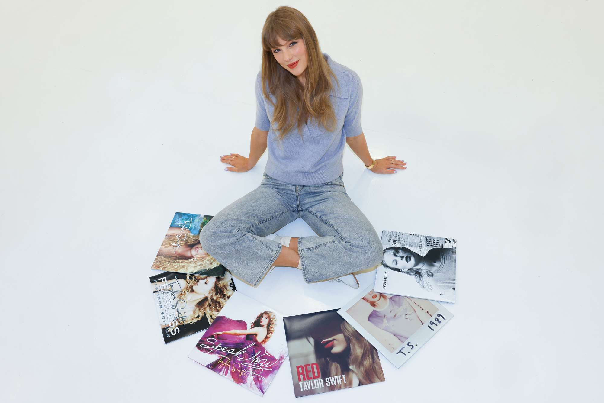
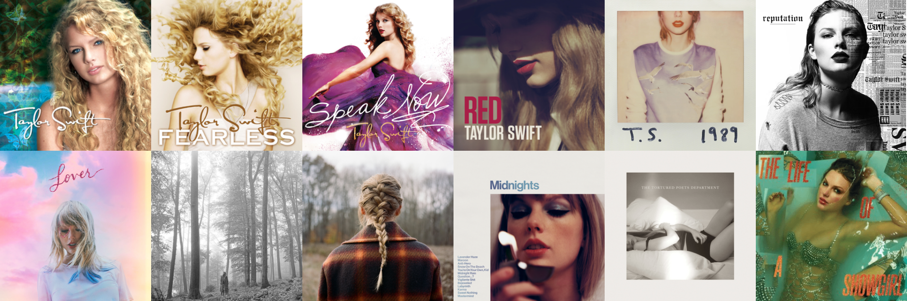
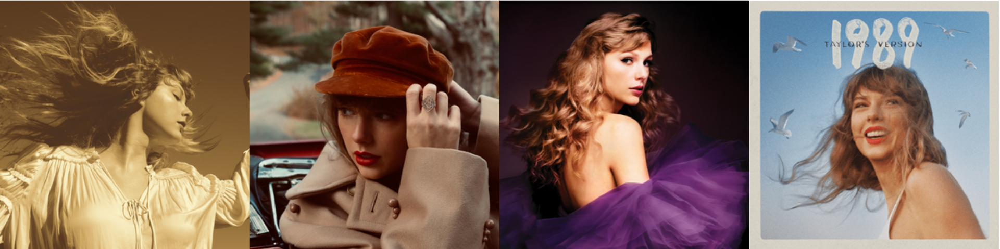

Shaping Pop Culture with her Creativity
Studio Albums
Taylor Swift has released a total of 12 studio albums from 2006 to 2025. Her music catalogue spans various genres—from country, pop, rock, alternative, and many more. She is known for her versatility and narrative, personal songwriting that has touched the lives and experiences of many listeners.
| Album Title | Release Year | Genre |
|---|---|---|
| Taylor Swift | 2006 | Country |
| Fearless | 2008 | Country |
| Speak Now | 2010 | Country Pop |
| Red | 2012 | Country Pop |
| 1989 | 2014 | Pop |
| reputation | 2017 | Pop |
| Lover | 2019 | Pop |
| folklore | 2020 | Alternative |
| evermore | 2020 | Alternative |
| Midnights | 2022 | Pop |
| The Tortured Poets Department | 2024 | Pop |
| The Life of a Showgirl | 2025 | Pop |
Re-recorded Albums
Taylor Swift began re-recording her first six studio albums in 2020 amid the ownership dispute of her master recordings with her former label, Big Machine Records. Last May 25, 2025, she regained full ownership of those albums after purchasing them from Shamrock Capital, crediting the success of her re-recording project and the Eras Tour.
| Album Title | Release Year | Genre |
|---|---|---|
| Fearless (Taylor's Version) | 2021 | Country |
| Red (Taylor's Version) | 2021 | Country Pop |
| Speak Now (Taylor's Version) | 2023 | Country Pop |
| 1989 (Taylor's Version) | 2023 | Pop |